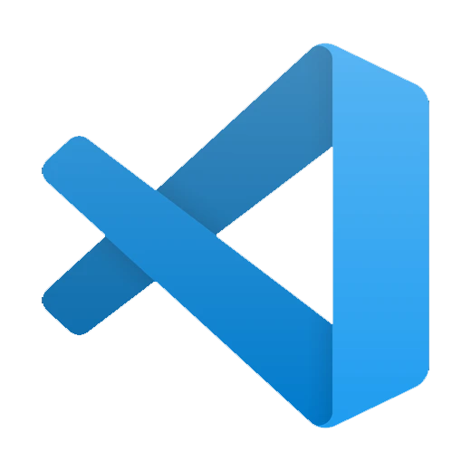

Informácie o mojej osobnosti
Volám sa Lukáš, pochádzam z Oravy a som študent Strednej školy. Venujem sa odboru Informačné a Sieťové technológie. Ako z odboru vyplýva tak mám veľmi rád technológie teda mobily, počítače, internet. Technológie ma lákajú už od mala a takto sa krásne pomaličky snažím vzdelávať a posúvať sa na vyššiu úroveň aby som niečo v živote dosiahol. Aktuálne sa najviac venujem programovaniu, ale aj grafike, videám či sieťam. Som typ človeka ktorý chce všetko vedieť urobiť si sám a preto sa venujem viac menej každému sektoru podstatnému pre moju budúcnosť. Poďme si o mne ale viacej povedať.
Pochádzam z hornej Oravy na ktorej žijem celý svoj život. Oravu ako region mám veľmi rád a obzvlášť prírodu. Som milovník prírody a športu. Sice sa žiadnemu športu profesionálne nevenujem no športy ako celok mám rád. Rád hrávam futbal, florbal ale najviac zo všetkého mám rád bicyklovanie. Bicyklujem celkom dlho ale najviac sa tomu venujem posledné dva roky. Taktiež ako som hovoril som milovník prírody, mám strašne moc rád prírodu a furt obdivujem jej krásu. Príroda je proste nádherná a vždy mi pomôže keď mám horšiu náladu alebo potrebujem nad niečim rozmýšľať. Alebo mi poslúži na regeneráciu tela i duše.
Taktiež som milovník cestovania. Bohužiaľ v minulosti mi cestovanie neumožňoval zdravotný stav z ktorého sa mi naštastie podarilo vymotať a tak teraz môžem cestovať už bez zdravotných obmedzení. V cestovaní mám plány čo chcem prejsť, no postupne sa snažim zoznamovať s cestovaním keďže som za detstva necestoval. Na Slovensku som bol na rôznych miestach ale mimo Česka a Slovenska som sa vymotal až 17.05.2023 kde som bol v Rakúsku. A dúfam že odteraz sa krajiny a miesta kde som bol budú iba rozšírovať. Ale som presvedčený že cestovanie milujem a baví ma.

Ako som začal na internete
Celé to začalo pred rokmi keď som ako malý túžil robiť videá na YouTube. Nejak som to začal študovať a skúšal som a vytvoril som si prvý YouTube kanál "LukyKralSK". Už si ale nepamätám čo tam bolo :D. Samozrejme absolútne sa tomu nedarilo a po nejakej dobe som prestal lebo to bolo aj pre mňa náročné. Neskôr som to skúsil znova s kanálom "XXsyzenXX" kde som natáčal Tanki Online a pokúšal sa aj streamovať Tanki Online. Vtedy sa ozval do komentov jeden zahraničný typek a vďaka nemu som bol happy a skúšal robiť rôzne videá. Po nejakej dobe som sa stal terčom výsmechu v škole a prestal som s tým lebo som to hlavne psychicky nezvládal. Potom prišla dlhšia pauza a prišlo to znova.
Po určitom čase za ktorý som sa dosť posunul prišiel na rad kanál LukyTechnology ktorý tu žije až doteraz. Pointov kanála bolo robiť tutoriály a Minecraft videá. No hlavne niečo náučné teda začalo to videami: Ako zrýchliť PC, ako zvýšiť FPS v Minecrafte. A prekvapivo kanálu sa darilo a začal som postupne rásť. Neskôr sme kúpili kvalitný internet a začal som streamovať Minecraft vďaka ktorému som nazbieral množstvo odoberateľov ale bolo aj veľa zlých streamov. Samozrejme prišli aj hateri. Po nejakej dobe som to psychicky nedával a chcel som sa úplne vymazať z internetu čo som z časti urobil. Po nejakej dobe ale prišiel refresh.
Po nejakej dobe som sa rozhodol znova vrátiť sa na internet a pokračovať v tvorbe. Aj som to nejakú dobu robil no prestavalo ma to baviť a dôvodom bolo že videa sa robili ťažko s aktuálnym počítačom ktorý už moc nevládal. Tak som sa rozhodol že YouTube nechám zatiaľ tak ako je a skúsim sa k nemu vrátiť keď sa mi podarí dostať k novému počítaču. A odvtedy som sa začal venovať programovaniu. Učil som sa programovať webove stránky a zdokonaľoval som sa v tom. Vytvoril som svoju prvú stránku a ďalej som zlepšoval svoje schopnosti. Neskôr som sa začal učiť backend a taktiež Javu (konkrétne SpigotAPI na programovanie pluginov do Minecraftu).
Ako som začal s programovaním
Čo sa týka programovania začal som zhruba v roku 2021 kde som sa na stránke Sololearn začal učiť prvý jazyk a to HTML. Vedel som že to je najľahší jazyk a zároveň som aj chcel vedieť vytvoriť si vlastný web. Takže som sa začal učiť a pomaličky som tomu chápal a vzdelával sa. Po možno mesiaci som začal sa učiť aj CSS no to ma niekde v polovice kurzu prestalo baviť a prestal som s tým. Po pol roku som sa k CSS kurzu vrátil a úspešne ho dokončil. Potom som si vyskúšal vytvoriť prvý web ktorý som aj vytvoril no moc hrdý naň nie som :D


Po týchto dvoch jazykoch a prvom webe som sa ďalej začal učiť JavaScript. Ten ma ale nebavil a najhoršie na tom bolo že som ho nedokázal pochopiť. Ale kurz som nejako s pomocou doplňovania zvládol. Neskôr som si dorobil ďalšie kurzy čo sa týkali Web Developingu a potom som naprogramoval prvú verziu tejto stránky. Na túto stránku som už bol moc hrdý. Potom po niekoľkých mesiacoch som začal s kurzom PHP a SQL. SQL bolo jednoduché a už som sa s ním stretol predtým, čiže som tomu pochopil ľahko ale PHP bolo už zložitejšie. Ale chápal som to o dosť viacej ako JavaScript. Podarilo sa mi tomu celkom porozumieť a vytvoriť stránku s PHP.
Po kurze PHP a SQL som vyskúšal naprogramovať stránku kde použijem tieto dva jazyky. Jednalo sa o projekt Akordeon-kurzy.sk ktorý ale skončil pretože počet návštevníkov bol nulový. Ale spätne som za to vďačný lebo som sa popri tej ceste naučil toho naozaj veľa. Naprogramoval som prihlasovací systém, kontrolu či danný uživateľ má kurz zakúpený a ešte zopár vecí. Samozrejme v PHP ani SQL som nebol nejaký dobrý pretože tieto jazyky ponúkali omnoho viacej než som ja vedel. Asi po roku som si kúpil platený kurz na Full-stack web developing kde som sa odučil PHP a naučil JavaScript, teda Node.js či React.js. A som za to vďačný :D
Moje plány do budúcnosti
Čo sa týka internetu chcem pokračovať čo som rozbehol. Chcem ďalej tvoriť na YouTube & Instagram a budovať si vlastnú komunitu. Mojím poslaním je niečo vám fanušikom prinášať. Niečo nové, čo ste nevedeli, rôzne tipy a triky, návody či zaujímavosti. Chcem si budovať komunitu a vďaka nej niečo budovať či dosiahnuť. Rozvíjať svoje schopnosti ktoré môžem neskôr pretaviť do niečoho väčšieho ako napríklad podnikania. Chcem sa ďalej vzdelávať a zdokonaľovať sa v tom čo robím.

V programovaní chcem pokračovať vo Full-stack web developingu. Tvoriť webove stránky ako frontend tak aj backend. Vzdelávať sa v tomto sektore pretože tento sektor je nekonečný a furt je niečo nové. Weby má bavia a náplňaju. Taktiež bokom viem a trocha tvorím v Jave, konkrétne v SpigotAPI teda Minecraft pluginy. Samotný Minecraft ako hra dosť padá, čo u mňa znižuje motiváciu tvoriť pluginy a ostať v tomto sektore. Ale niečo som už vytvoril a ešte niečo budem skúšať. Minecraft je srdcovka. Ďalej sa uvidí čo život prinesie, no chcem ostať v týchto dvoch sektoroch.